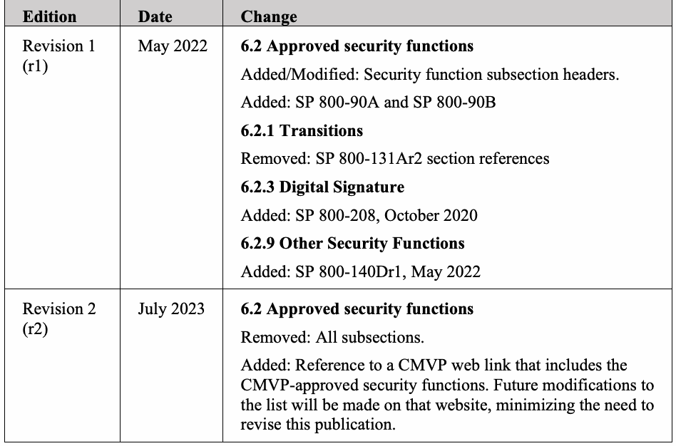

NIST Special Publication · PDF 原文抽出
Cryptographic Module Validation Program (CMVP)-Approved Security Functions: CMVP Validation Authority Updates to ISO/IEC 24759
CMVP承認セキュリティ機能
NIST SP 800-140C Rev. 2（Cryptographic Module Validation Program (CMVP)-Approved Security Functions: CMVP Validation Authority Updates to ISO/IEC 24759）の英文と日本語訳を段落ごとに並べた閲覧用ページです。CMVPが承認するセキュリティ機能の扱いを示します。現在の承認済み機能一覧はNISTの案内ページを参照します。 翻訳は非公式です。要件の確認にはNIST の正式版 PDFを参照してください。
PDF から抽出した原文は原本との照合待ちです。
NIST Special Publication NIST SP 800-140Cr2
NIST特別刊行物 NIST SP 800-140Cr2
Cryptographic Module Validation
暗号モジュール検証
Program (CMVP)-Approved
プログラム（CMVP）が承認した
Security Functions:
セキュリティ機能：
CMVP Validation Authority Updates to ISO/IEC 24759
ISO/IEC 24759に対するCMVP検証機関の更新
Alexander Calis
Alexander Calis
This publication is available free of charge from: https://doi.org/10.6028/NIST.SP.800-140Cr2
本刊行物は次から無料で入手できる：https://doi.org/10.6028/NIST.SP.800-140Cr2
Alexander Calis Computer Security Division
Alexander Calis コンピュータセキュリティ部門
Information Technology Laboratory
情報技術研究所
This publication is available free of charge from: https://doi.org/10.6028/NIST.SP.800-140Cr2
本刊行物は次から無料で入手できる：https://doi.org/10.6028/NIST.SP.800-140Cr2
July 2023
2023年7月

PDF原本のp.2にある図
U.S. Department of Commerce Gina M. Raimondo, Secretary
米国商務省 Gina M. Raimondo 長官
National Institute of Standards and Technology
米国国立標準技術研究所
Laurie E. Locascio, NIST Director and Under Secretary of Commerce for Standards and Technology
Laurie E. Locascio、NIST所長兼標準技術担当商務次官
Certain commercial equipment, instruments, software, or materials, commercial or non-commercial, are identified in this paper in order to specify the experimental procedure adequately. Such identification does not imply recommendation or endorsement of any product or service by NIST, nor does it imply that the materials or equipment identified are necessarily the best available for the purpose.
本書では、実験手順を十分に規定するために、商用または非商用の特定の機器、器具、ソフトウェア、または材料を特定している。このような特定は、NISTによるいかなる製品またはサービスの推奨や承認を意味するものではなく、また特定された材料または機器が、その目的のために入手可能なもののうち必ずしも最良であることを意味するものでもない。
There may be references in this publication to other publications currently under development by NIST in accordance with its assigned statutory responsibilities. The information in this publication, including concepts and methodologies, may be used by federal agencies even before the completion of such companion publications. Thus, until each publication is completed, current requirements, guidelines, and procedures, where they exist, remain operative. For planning and transition purposes, federal agencies may wish to closely follow the development of these new publications by NIST.
割り当てられた法定責任に従ってNISTが現在策定中の他の刊行物を、本刊行物で参照する場合がある。これらの関連刊行物が完成する前でも、連邦機関は本刊行物の情報（概念や方法論を含む）を使用できる。したがって、各刊行物が完成するまでは、現行の要件、ガイドラインおよび手順が、それらが存在する場合には、引き続き有効である。計画および移行のため、連邦機関はNISTによるこれらの新刊行物の策定状況を注視するとよい。
Organizations are encouraged to review all draft publications during public comment periods and provide feedback to NIST. Many NIST cybersecurity publications, other than the ones noted above, are available at https://csrc.nist.gov/publications.
組織には、公開コメント期間中にすべての草案刊行物を確認し、NISTにフィードバックを提供することを推奨する。上記以外にも、多数のNISTサイバーセキュリティ刊行物を https://csrc.nist.gov/publications で入手できる。
Authority
権限
This publication has been developed by NIST in accordance with its statutory responsibilities under the Federal Information Security Modernization Act (FISMA) of 2014, 44 U.S.C. § 3551 et seq., Public Law (P.L.) 113-283. NIST is responsible for developing information security standards and guidelines, including minimum requirements for federal information systems, but such standards and guidelines shall not apply to national security systems without the express approval of appropriate federal officials exercising policy authority over such systems. This guideline is consistent with the requirements of the Office of Management and Budget (OMB) Circular A-130.
本刊行物は、2014年連邦情報セキュリティ近代化法（FISMA）、44 U.S.C. § 3551 et seq.、公法（P.L.）113-283に基づく法定責任に従ってNISTが策定した。NISTは、連邦情報システムの最低要件を含む情報セキュリティ標準およびガイドラインを策定する責任を負う。ただし、当該システムについて政策権限を行使する適切な連邦職員の明示的な承認がない限り、これらの標準およびガイドラインは国家安全保障システムには適用されない。本ガイドラインは行政管理予算局（OMB）通達A-130の要件に適合している。
Nothing in this publication should be taken to contradict the standards and guidelines made mandatory and binding on federal agencies by the Secretary of Commerce under statutory authority. Nor should these guidelines be interpreted as altering or superseding the existing authorities of the Secretary of Commerce, Director of the OMB, or any other federal official. This publication may be used by nongovernmental organizations on a voluntary basis and is not subject to copyright in the United States. Attribution would, however, be appreciated by NIST.
本刊行物のいかなる内容も、法定権限に基づき商務長官が連邦機関に義務付け、拘束力を持たせた標準およびガイドラインに反するものと解釈してはならない。また、本ガイドラインを、商務長官、OMB長官、その他の連邦職員が有する既存の権限を変更または置き換えるものと解釈してはならない。本刊行物は非政府組織が任意に利用でき、米国内では著作権の対象ではない。ただし、NISTへの帰属表示を歓迎する。
NIST Technical Series Policies
NIST技術シリーズの方針
Copyright, Use, and Licensing Statements
著作権、使用およびライセンスに関する声明
NIST Technical Series Publication Identifier Syntax
NIST技術シリーズ刊行物識別子の構文
Publication History
刊行履歴
Approved by the NIST Editorial Review Board on 2023-03-30 Supersedes NIST Special Publication (SP) 800-140Cr1 (May 2022) https://doi.org/10.6028/NIST.SP.800-140Cr1
NIST編集審査委員会による承認日：2023-03-30 NIST特別刊行物（SP）800-140Cr1（2022年5月）を置き換える https://doi.org/10.6028/NIST.SP.800-140Cr1
How to Cite this NIST Technical Series Publication:
本NIST技術シリーズ刊行物の引用方法：
Calis A (2023) Cryptographic Module Validation Program (CMVP)-Approved Security Functions: CMVP Validation Authority Updates to ISO/IEC 24759. (National Institute of Standards and Technology, Gaithersburg, MD), NIST Special Publication (SP) NIST SP 800-140Cr2. https://doi.org/10.6028/NIST.SP.800-140Cr2
Calis A（2023）「暗号モジュール検証プログラム（CMVP）が承認したセキュリティ機能：ISO/IEC 24759に対するCMVP検証機関の更新」。（米国国立標準技術研究所、メリーランド州ゲイサーズバーグ）、NIST特別刊行物（SP）NIST SP 800-140Cr2。https://doi.org/10.6028/NIST.SP.800-140Cr2
Author ORCID iDs
著者のORCID iD
Alexander Calis: 0000-0003-1937-8129
Alexander Calis：0000-0003-1937-8129
Contact Information
連絡先
sp800-140-comments@nist.gov
sp800-140-comments@nist.gov
National Institute of Standards and Technology Attn: Computer Security Division, Information Technology Laboratory 100 Bureau Drive (Mail Stop 8930) Gaithersburg, MD 20899-8930
米国国立標準技術研究所 宛先：情報技術研究所 コンピュータセキュリティ部門 100 Bureau Drive（Mail Stop 8930）Gaithersburg, MD 20899-8930
All comments are subject to release under the Freedom of Information Act (FOIA).
すべてのコメントは情報公開法（FOIA）に基づく公開の対象となる。
Abstract
要約
The approved security functions listed in this publication replace the ones listed in International Organization for Standardization/International Electrotechnical Commission (ISO/IEC) 19790 Annex C and ISO/IEC 24759 6.15, within the context of the Cryptographic Module Validation Program (CMVP). As a validation authority, the CMVP may supersede Annex C in its entirety. This document also supersedes SP 800-140Cr1.
本刊行物に掲載される承認済みセキュリティ機能は、暗号モジュール検証プログラム（CMVP）の枠組みにおいて、国際標準化機構／国際電気標準会議（ISO/IEC）19790附属書CおよびISO/IEC 24759の6.15に掲載された機能を置き換える。検証機関として、CMVPは附属書C全体を置き換えることができる。本書はSP 800-140Cr1も置き換える。
Keywords
キーワード
Cryptographic Module Validation Program; CMVP; FIPS 140 testing; FIPS 140; ISO/IEC 19790; ISO/IEC 24759; testing requirement; vendor evidence; vendor documentation; security policy.
暗号モジュール検証プログラム；CMVP；FIPS 140試験；FIPS 140；ISO/IEC 19790；ISO/IEC 24759；試験要件；ベンダー証拠；ベンダー文書；セキュリティポリシー。
Reports on Computer Systems Technology
コンピュータシステム技術に関する報告書
The Information Technology Laboratory (ITL) at the National Institute of Standards and Technology (NIST) promotes the U.S. economy and public welfare by providing technical leadership for the Nation’s measurement and standards infrastructure. ITL develops tests, test methods, reference data, proof of concept implementations, and technical analyses to advance the development and productive use of information technology. ITL’s responsibilities include the development of management, administrative, technical, and physical standards and guidelines for the cost-effective security and privacy of other than national security-related information in federal information systems. The Special Publication 800-series reports on ITL’s research, guidelines, and outreach efforts in information system security, and its collaborative activities with industry, government, and academic organizations.
米国国立標準技術研究所（NIST）の情報技術研究所（ITL）は、国家の計測・標準インフラに対する技術的リーダーシップを提供することにより、米国経済と公共の福祉を促進している。ITLは、情報技術の発展と有効活用を推進するため、試験、試験方法、参照データ、概念実証の実装、および技術分析を開発している。ITLの責務には、連邦情報システムにおける国家安全保障関連以外の情報について、費用対効果の高いセキュリティとプライバシーを実現するための、マネジメント、管理、技術および物理面の標準とガイドラインの開発が含まれる。特別刊行物800シリーズは、情報システムセキュリティに関するITLの研究、ガイドライン、普及活動、および産業界、政府、学術機関との協働活動を報告する。
Supplemental Content
補足コンテンツ
See https://csrc.nist.gov/projects/cmvp/sp800-140-series-info for details about the NIST Special Publication (SP) 800-140x series publications and their relationships to ISO/IEC 19790 and ISO/IEC 24759.
NIST特別刊行物（SP）800-140xシリーズの各刊行物、およびそれらとISO/IEC 19790およびISO/IEC 24759との関係の詳細については、https://csrc.nist.gov/projects/cmvp/sp800-140-series-info を参照。
Audience
対象読者
This document is intended for use by vendors, testing labs, and the CMVP.
本書はベンダー、試験機関、およびCMVPによる使用を意図している。
Table of Contents
目次
1. Scope — 1
1. 適用範囲 — 1
2. Normative references — 1
2. 規範参照 — 1
3. Terms and definitions — 1
3. 用語と定義 — 1
4. Symbols and abbreviated terms — 1
4. 記号と略語 — 1
5. Document organization — 1
5. 文書構成 — 1
5.1. General — 1
5.1. 一般 — 1
5.2. Modification — 2
5.2. 変更 — 2
6. CMVP-approved security function requirements — 2
6. CMVP承認済みセキュリティ機能の要件 — 2
6.1. Purpose — 2
6.1. 目的 — 2
6.2. Approved security functions — 2
6.2. 承認済みセキュリティ機能 — 2
Appendix A. Document Revisions — 3
付録A. 文書の改訂 — 3
1. Scope
1. 適用範囲
This document specifies the Cryptographic Module Validation Program (CMVP)-approved security functions and supersedes those specified in International Organization for Standardization/International Electrotechnical Commission (ISO/IEC) 19790 Annex C and ISO/IEC 24759 paragraph 6.15. This document also supersedes SP 800-140Cr1.
本書は、暗号モジュール検証プログラム（CMVP）承認済みセキュリティ機能を規定し、国際標準化機構／国際電気標準会議（ISO/IEC）19790附属書CおよびISO/IEC 24759の6.15項に規定されるものを置き換える。本書はSP 800-140Cr1も置き換える。
2. Normative references
2. 規範参照
This section identifies the normative references cited as ISO/IEC 19790 and ISO/IEC 24759. The specific editions to be used are ISO/IEC 19790:2012 and ISO/IEC 24759:2017. Please note that the version 19790:2012 referenced here includes the corrections made in 2015.
本節では、ISO/IEC 19790およびISO/IEC 24759として引用される規範参照を示す。使用すべき具体的な版は、ISO/IEC 19790:2012およびISO/IEC 24759:2017である。ここで参照する19790:2012の版には、2015年に行われた訂正が含まれることに留意されたい。
National Institute of Standards and Technology (2019) Security Requirements for Cryptographic Modules. (U.S. Department of Commerce, Washington, DC), Federal Information Processing Standards Publication (FIPS) 140-3. https://doi.org/10.6028/NIST.FIPS.140-3
国立標準技術研究所（2019）「暗号モジュールのセキュリティ要件」。（米国商務省、ワシントンD.C.）、連邦情報処理標準刊行物（FIPS）140-3。https://doi.org/10.6028/NIST.FIPS.140-3
3. Terms and definitions
3. 用語と定義
The following terms and definitions supersede or are in addition to ISO/IEC 19790. None at this time
以下の用語および定義は、ISO/IEC 19790の内容に優先するか、それに追加される。現時点では該当なし。
4. Symbols and abbreviated terms
4. 記号と略語
The following symbols and abbreviated terms supersede or are in addition to ISO/IEC 19790 and ISO/IEC 24759 throughout this document:
以下の記号および略語は、本書全体を通じてISO/IEC 19790およびISO/IEC 24759の内容に優先するか、それらに追加される：
CMVP Cryptographic Module Validation Program
CMVP 暗号モジュール検証プログラム
FIPS Federal Information Processing Standard
FIPS 連邦情報処理標準
ISO/IEC International Organization for Standardization/International Electrotechnical Commission
ISO/IEC 国際標準化機構／国際電気標準会議
5. Document organization
5. 文書構成
5.1. General
5.1. 一般
Section 6 of this document replaces the approved security functions of ISO/IEC 19790 Annex C and ISO/IEC 24759 paragraph 6.15. This document also supersedes SP 800-140Cr1.
本書の第6節は、ISO/IEC 19790附属書CおよびISO/IEC 24759の6.15項にある承認済みセキュリティ機能を置き換える。本書はSP 800-140Cr1も置き換える。
5.2. Modification
5.2. 変更
This publication is a complete replacement of the approved security functions of ISO/IEC 19790 Annex C and ISO/IEC 24759 paragraph 6.15. There are no other modifications, additions, or deletions.
本刊行物は、ISO/IEC 19790附属書CおよびISO/IEC 24759の6.15項にある承認済みセキュリティ機能を全面的に置き換える。他に変更、追加または削除はない。
6. CMVP-approved security function requirements
6. CMVP承認済みセキュリティ機能の要件
6.1. Purpose
6.1. 目的
This document identifies CMVP-approved security functions. It precludes the use of all other security functions.
本書はCMVP承認済みセキュリティ機能を特定する。他のすべてのセキュリティ機能の使用を排除する。
6.2. Approved security functions
6.2. 承認済みセキュリティ機能
For the current list of CMVP-approved security functions, see https://csrc.nist.gov/projects/cmvp/sp800-140c.
CMVP承認済みセキュリティ機能の最新リストについては、https://csrc.nist.gov/projects/cmvp/sp800-140c を参照。
Appendix A. Document Revisions
付録A. 文書の改訂
| Edition | Date | Change |
| Revision 1 (r1) | May 2022 | 6.2 Approved security functions Added/Modified: Security function subsection headers. Added: SP 800-90A and SP 800-90B 6.2.1 Transitions Removed: SP 800-131Ar2 section references 6.2.3 Digital Signature Added: SP 800-208, October 2020 6.2.9 Other Security Functions Added: SP 800-140Dr1, May 2022 |
| Revision 2 (r2) | July 2023 | 6.2 Approved security functions Removed: All subsections. Added: Reference to a CMVP web link that includes the CMVP-approved security functions. Future modifications to the list will be made on that website, minimizing the need to revise this publication. |
原本PDFの抜粋画像

| 版 | 日付 | 変更内容 |
| 改訂1（r1） | 2022年5月 | 6.2 承認済みセキュリティ機能 追加／変更：セキュリティ機能の小節見出し。追加：SP 800-90AおよびSP 800-90B。6.2.1 移行 削除：SP 800-131Ar2の節参照。6.2.3 デジタル署名 追加：SP 800-208、2020年10月。6.2.9 その他のセキュリティ機能 追加：SP 800-140Dr1、2022年5月。 |
| 改訂2（r2） | 2023年7月 | 6.2 承認済みセキュリティ機能 削除：すべての小節。追加：CMVP承認済みセキュリティ機能を掲載するCMVPウェブリンクへの参照。今後のリストの変更は同ウェブサイト上で行われ、本刊行物を改訂する必要性を最小限に抑える。 |